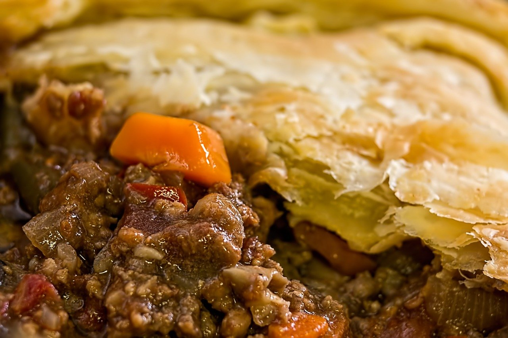

Meaty Cottage Pie Recipe

Serve up this delicious meaty cottage pie on any winter day to warm your guest up!
This is definitely a recipe for a cold winters day
super simple and easy to make. We believe it's all about great organic meat and the way it's cooked
Preparation time: less than 30 minutes | Cooking time: 1 to 2 hours | Serves: 6
Ingredients List
Cottage pie filling
- 50ml/2fl oz olive oil
- 1 large onion or 3 to 4 banana shallots, finely chopped
- 650g/1lb 7oz beef mince
- 2 tbsp tomato purée
- 1 tbsp plain flour
- 150ml/5fl oz red wine
- 4 sprigs fresh thyme, leaves only
- 400ml/14fl oz beef stock
- Worcestershire sauce, to taste
- salt and freshly ground black pepper
Mash potato
- 900g/2lb King Edward potatoes, peeled and chopped
- 115g/4oz butter
- 125ml/4½fl oz milk
Steps
- Heat half of the oil in a large heavy-based pan. Add the onion and cook until softened. Tip it onto a plate.
- Return the pan to the heat and add the remaining oil. When it's hot, fry the mince, in batches if needed, for 4 to 5 minutes, or until browned all over. Stir in the cooked onion and tomato purée and cook for 1 minute. Stir in the flour and cook for a further minute. Pour in the red wine, scraping up any caramelised bits with a wooden spoon, and add the thyme.
- Add the stock and simmer for 45 minutes, or until the mince is tender and the mixture has thickened. Season to taste, and add a few dashes of Worcestershire sauce. Keep warm over a very low heat. Preheat the grill to high.
- Meanwhile, for the mash, put the potatoes in a pan of salted water and bring to the boil. Reduce the heat and simmer for 12 to 15 minutes, or until they are tender. Drain and return the potatoes to the pan, then place over the heat for about 1 minute to drive off any excess moisture. Mash well, then add the butter and milk, beating to form a smooth mash. Season to taste.
- Put the cottage pie filling in a baking dish and spoon the mash over the top. Grill for 8 to 10 minutes, or until golden-brown.
- Meanwhile, boil the peas in boiling water in a small saucepan for 3 to 4 minutes, then drain and add the butter. Serve the cottage pie with the peas.